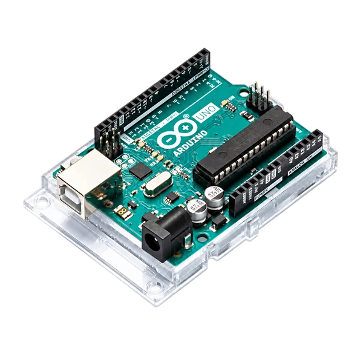
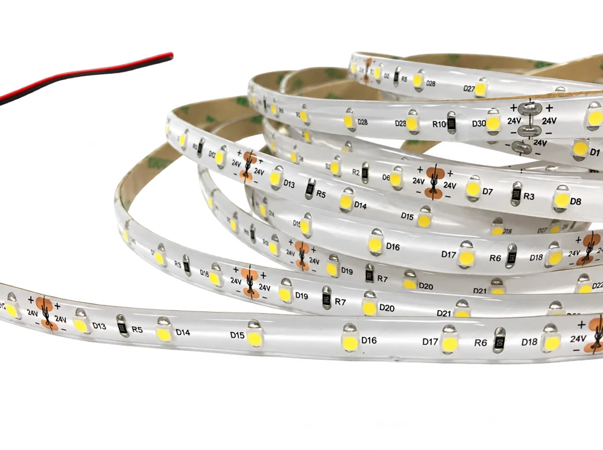

从青绿山水到互动装置
我从山形与青绿设色出发，把画面转成两条互动路线：音乐改变光色，触摸点亮局部光纤。
- 开始时间
- 负责事项
- 我负责山形与色彩转译、两种交互路线设计，以及木板造型、赋色和光纤点阵制作。
- 进度
- 已做出音光与触摸光两种实体装置，完成对应的灯光互动演示。
切入点
- 色彩与材质
- 矿物青绿、赭石与颗粒感，转译为灯光、丙烯底色和金粉反光。
- 空间与结构
- 把堆叠的山体分层切割，以大小和前后位置组织虚实。
- 技法和笔触
- 由山形、线条和色块，逐步提取为可制作的轮廓与点阵。
- 叙事和意境
- 用随音乐变化的光色，探索同一幅山水在不同情绪中的呈现。
- 互动与参与
- 触摸传感器触发局部光点，让观众介入画面的生成。
石青#3A6585
苦绿#90B087
碧绿#92AB50
古铜#A9914B
元素剖析
从长卷中拆出山体，重新组织前后层次，再以灯光附着颜色。

表现形式1 · 造型设计
从长卷中提取山形，切成独立木板；在层叠结构后布置灯带，让音乐改变山水的光色。
表现形式1 · 原理解析
原稿记录了 10 位测试者的颜色选择，作为调性与光色匹配的探索。
从声音到灯光
- MAX4466 电容式麦克风采集音频
- FFT 频域分析，提取峰值频率与振幅
- FastLED 峰值映射色相，振幅映射亮度
- LED 灯带 改变山形背后的光色
- 采样点数
- 64
- 采样频率
- 10,000 Hz
- 原稿灯珠数
- 16
查看原稿映射代码片段
// Peak frequency → hue
int hue = map(peakIndex, 0, SAMPLES / 2, 0, 255);
CRGB color = CHSV(hue, 255, 255);
for (int i = 0; i < LED_COUNT; i++) {
leds[i] = color;
}
// Amplitude → brightness
int brightness = map(maxAmplitude, 0, 0.2, 0, 255);
FastLED.setBrightness(brightness);
FastLED.show();
木板切割与赋色
激光切割后按山体分组排列，用丙烯铺底色，再以金粉增强反光。
灯带装配
灯带位置同时服从山形层次与布线路径，通过结构钻孔连接前后线路，再接入 Arduino。
音光装置呈现
表现形式2 · 造型设计
把山形的颜色分区转成点阵，一个点对应一根光纤。触摸传感器控制局部光源，依次点亮周围的光点。
表现形式2 · 运行逻辑
-
触摸传感器
触碰装置表面，激活相应区域。
-

Arduino 单片机
读取数字信号，控制对应灯组。
-

LED 灯带
光源按区域改变颜色与亮度。
-

光纤打组
同一区域的光纤接入一组灯珠。
-

光纤导光
发光端与表面齐平，形成山形点阵。
表现形式2 · 制作过程
表现形式2 · 传感器装配
在背面把光纤分组，接入各自灯箱；木条内侧贴镜，加强光线的传导。
正面修整与传感器安装
修整正面光纤，让发光端与表面齐平；每个触摸区域对应一组光源。